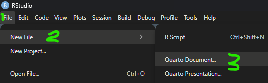

For the second part of the workshop:
You can access Part 1 of the slides at seanvdm.co.za/mdag2025 and on the last slide of Part 1 you will find a link to all the resources for the day, including Part 2.
How do you get this power for yourself?
Should you even try to get this power? Isn’t is dangerous?
The biggest downsides are obvious when you try to distribute it:
PDF and HTML are absorbing states, Word nearly so.
The interactivity is brought to you (under the hood) by JavaScript. You do not see it - it is very well hidden, but it is working in the background to display the figures and react to your inputs.
The JavaScript accompanies (or is embedded in) HTML. No, you do not need to know any HTML at all, just like you don’t need to know that a .docx is actually a .zip containing .xml files.
All you need to learn is Markdown and a little of your favourite scripting language (e.g. R).
I do almost all my work directly in markdown
# This is a big heading, ## This is a smaller heading, ###### This is a tiny heading# This is a section slide heading, ## This is a normal slide heading<https://www.this_is_a_link.com>, *This is italics*, **This is bold**
[This is a fancier link](https://pointing.to.this/)> starts a quote, - creates a bullet, and numbered lists are just 1.
Text with borders, perhaps in columns
Note
A note
Warning
or a warning, perhaps with a highlight
Interactive diagrams are fun, but require detailed specification. Simple diagrams can be done really fast with just basic labels:
flowchart LR
A{Is Y continuous?} -->|No| B(Table)
A -->|Yes| C{Is X1 continuous?}
C -->|No| D[Box plot]
C -->|Yes| E[Scatter plot]
```{language options} some code ```Quarto supports a lot of languages but I typically use R, Stan, CSS, and HTML only for my work.
Every target format has ideal graphics formats for plots.
My recommendation
Enhanced Metafile (.emf)
Catch: Requires the devEMF library, e.g.
You can try the Windows Metafile (.wmf) format instead, which is built into R. It usually works but is buggy sometimes.
Or you can use Scalable Vector Graphics (.svg) which works great in Office 365 Desktop.
My recommendation
Portable Document Format (.pdf)
Catch: only works with PDF rendering
Or you can use Scalable Vector Graphics (.svg) which works in theory but might be buggy in practice depending on your editor and packages.
For all static plots, e.g. base plot, ggplot2, biplotEZ, …, use Scalable Vector Graphics (.svg) for the highest quality and smallest file size
Plotly
Plotly is the most popular, most powerful, and easiest to use by far. BUT the R package is no longer maintained and the R help files are on their way out 😢
Echarts4r
Echarts4r is new and maintained, but more difficult to use and limited in scope.
In Part 3 we will work through the steps of:
In Part 1 we showed that we can play with data interactively on a slide for basic exploration. What if you need the audience/students to actually work with the data though?
What if you want to generate or prepare data for students?
You might think, “Let me make it look nice manually by opening it in Excel,” but then you decide to generate new data and you have to repeat those steps, again and again, and then you’re going to ask yourself, “Why didn’t I just make this part of the code?”
R has several nice packages for this, the best of which are openxlsx and openxlsx2.
That’s right
Quarto documents can take inputs!
students <- c('2024000001', '2024000002', '2024000003', '2024000004',
'2024000005') # Get class list in R somehow
# You can read student numbers from class list / mark list file:
# students <- openxlsx::read.xlsx('mark_list.xlsx', startRow = 4)$Student.ID
n <- 100
students |> lapply(\(s) { # Make a list of data frames
data.frame(
Mark = rbinom(n, 100, 0.6),
Group = c('🐬', '🐪') |> sample(n, replace = TRUE),
Height = rnorm(n, 1.67, 0.1) |> round(2)
)
}) |> setNames(students) |> # Give the data frames names
openxlsx::write.xlsx('gen_data_3.xlsx',
firstRow = TRUE, asTable = TRUE,
colWidths = c(10, 11, 12) # or "auto"
) When you introduce R to people who haven’t used it before, where do you start?
At the start of each Quarto document is a YAML block. The only line that’s compulsory is the output line that says what format we want, e.g. Word, PDF, PowerPoint, Beamer, revealjs, etc.
This presentation was created using the Reveal.js format in Quarto, using the RStudio IDE. Background image created using image editor GIMP by compositing images from CoPilot.
Try to create a basic Quarto document and render it.
2025/11/25 - MDAG